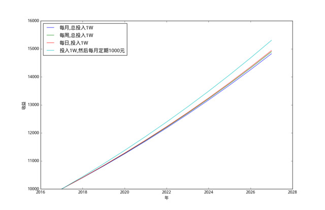

生活上的问题
之前我们对理财中年化收益率的问题进行了介绍,而自己一直以为按照每月的结算方式比每周及每日的要高,而对于定期存入固定金额的方式不确定。
今天我们来说明下各种理财周期收益的计算,以年为最终的结算单位,主要对如下的4种方式进行操作:
- 总投入1W,定期1个月,到期后连同收益一起转入下一期
- 总投入1W,定期1周,到期后连同收益一起转入下一期
- 总投入1W,定期1天,到期后连同收益一起转入下一期
- 1次性投入1W,然后每个月定期存入1000块,到期后连同收益一起转入下一期,定期1个月
在这里,为了方便收益的计算,假设年化收益率为4.0%,关于这个收益率基本上的理财平台的货币基金都可以满足。
对于定期1个月的情况,第1个月的总收益为:
10000*30*0.04/365=32.87
而对于定期为1周的情况,那么第1周的收益为:
10000*7*0.04/365=7.67
对于按照每天收益计算的话,那么其收益为1.095元。然后我们根据收益与本金一起转入下一期,我们可以归纳其计算方式,其中定期1个月的方式,1年后的总收益为:
10000(1+30*0.04/365)^12=10401.73
使用Python进行解决
在这里,我们使用Python进行计算,其中年化收益率的计算为:
def rate(a,b):
c = a * b / (365 * 100)
return round(c,6)然后每个月的收益为:
first = 10000 #存入的本金
def compute_result(a,b,c=10):
s = rate(a,b)
result = []
for i in range(0,12):
val = first*(1+s)**i
val = round(val,2)
result.append(val)
return result由于我们想将其与每周、每日、每月的方式进行比较,因此我们需要将上述的代码进行修改:
def compute_income(a,b,c=10):
s = rate(a,b)
result = []
n = int(floor(365 / b))
num = n * c#计算周期数
for i in range(0,num):
val = first*(1+s)**i
val = round(val,2)
result.append(val)
#补齐
l = len(result)
tmp = result
result = []
for i in range(0,l,n):
result.append(tmp[i])
return result这样,我们就实现了每日、每周、每月对应收益的计算了,在这里我们以年为单位,显示每年的总收益。在这里我们使用matplotlib进行显示:
from matplotlib import pyplot as plt
import matplotlib as mpl
mpl.rcParams['font.sans-serif'] = ['Droid Sans Fallback']
def draw_figure(data,label):
l = len(data)
now = date.today()
year = int(now.year)
l = range(year,year+l)
plt.plot(l,data,label=label)
plt.legend(loc='upper left')在这里,我们根据返回数据的长度绘制对应的图像。接着我们来看首次投入1W块,然后每月定期投入1K的情况,对于这种情况,可以归纳为(a+d)*(1+k)我们可以通过如下的代码来实现:
def periodic_result(a,b,d,c=10):
s = rate(a, b)
e = (1+s)
result = []
n = int(floor(365 / b))
num = n * (c-1)
val = first*e
result.append(first)
result.append(val)
for i in range(1,num):
val = (val+d)*e
val = round(val,2)
val = val - d
result.append(val)
l = len(result)
tmp = result
result = []
for i in range(0,l,n):
result.append(tmp[i])
return result在这里我们计算出每个月的总收入后加上定期投入的金额,再乘以对应的比率即可得到相应的收入。另外,为了计算对应的收益,我们提出了每个月定期投入的本金,从而计算实际的增加的金额。
最后,我们计算对应的4种情况:
def main():
n = 11
result4 = periodic_result(4,30,1000,n) #投入1W,再定期存入1k
result = compute_income(4, 30,n) #定期1个月
result2 = compute_income(4,7,n) #定期1周
result3 = compute_income(4,1,n) #定期1天
draw_figure(result,u'每月,总投入1W')
draw_figure(result2,u'每周,总投入1W')
draw_figure(result3,u'每日,投入1W')
draw_figure(result4,u'投入1W,然后每月定期1000元')
plt.xlabel(u'年')
plt.ylabel(u'收益')
plt.show()其对应的图像如下所示:

而其对应的每年的收益如下所示,依次为每月1K、每月、每周和每日:
[10000, 10438.57, 10898.14, 11376.18, 11873.43, 12390.66, 12928.66, 13488.29, 14070.41, 14675.9, 15305.71] [10000.0, 10401.77, 10819.69, 11254.4, 11706.57, 12176.91, 12666.15, 13175.04, 13704.38, 14254.98, 14827.71] [10000.0, 10406.74, 10830.03, 11270.53, 11728.95, 12206.01, 12702.48, 13219.14, 13756.82, 14316.37, 14898.67] [10000.0, 10409.65, 10836.07, 11279.97, 11742.05, 12223.06, 12723.77, 13244.99, 13787.57, 14352.37, 14940.31]
可以看到,如果采用每月转入固定金额1K的方式,那么1年后的收益为438.57年,而每月结算的方式只有401.77元。另外,通过理财的方式并不能让你致富,可以看到10年后的收益才为5k左右。
结论
在收益为4%的情况,实际上定期1个月、1周和1天的情况收益是相差不大的,而越是短期,反而收益越高。但是如果采用定期投入资金的情况,收益会越来越明显。
由于实际中涉及到交易的T+1结算问题、在节假日买入的问题以及实际收益的波动等问题,实际最终收入比上述的方式要略低一些。
当然,在实际情况中还是根据自己的资金需要问题,进行合理的投资。